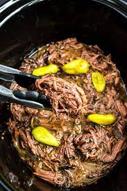

Mississippi Roast Recipe

The Mississippi Roast is one of the greatest dishes one can make,
and it is surprisingly easy to do. It is a slow cooking process
that is almost entirely hands off after the Roast is in the
crockpot; and to make it even better, the recipe only calls for 5
ingredients.
Ingredients
- Chuck Roast
- Ranch dressing mix
- Au jus gravy mix
- Butter
- Jarred pepperoncini peppers
Recipe Steps
- Place chuck roast in the bottom of the crockpot.
- Sprinkle the ranch and au jus mixes over the roast.
- Add the butter and pepperoncini peppers.
- Place the lid on top and cook over low heat for 8 hours or more.